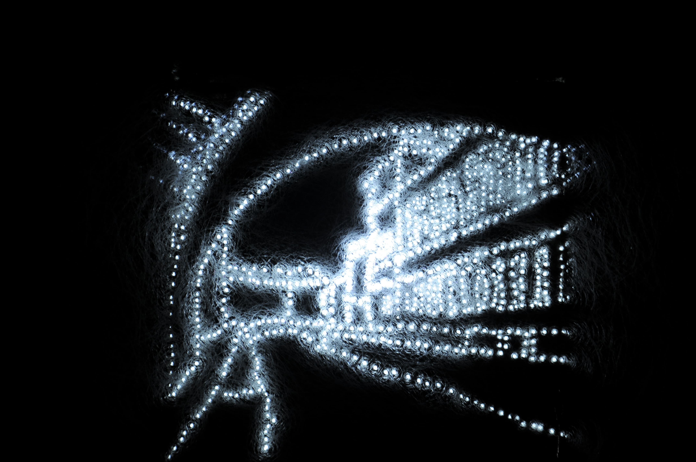
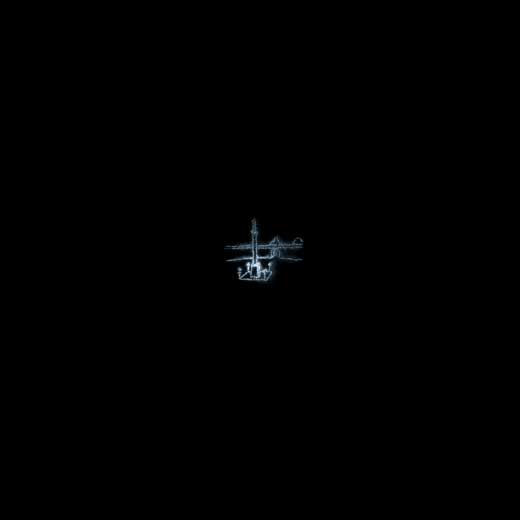
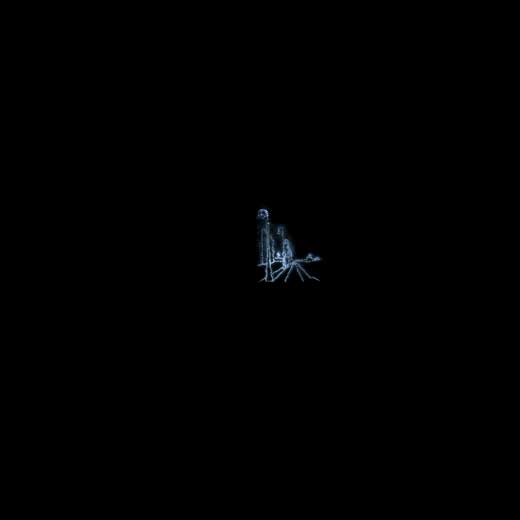

Missing
installation photographique
2013-2015
Quand quelque chose ou quelqu’un nous manque, est-ce cette personne, cet endroit où bien le moment passé qui nous manque, l’expérience vécue à ce moment ? Quelle place ces moments passés prennent-ils dans notre vie ? En s’inspirant des lieux différents, ces photographies sont le mélange d’expérience de “manque d’un lieu” vécue par plusieurs personnes, y compris moi.
___
Journal du bord :
Mon deuil pour la ville que j’ai adorée et que j’ai dû quitter. Pour ne pas rester dans cet état de manque, j’ai passé beaucoup de temps à me questionner : pourquoi ce sentiment de “manque” existe-t-il ? Qu’est-ce qui me manque et comment puis-je recréer ces espaces absents dans ma vie actuelle ?



×